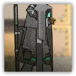
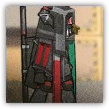

萨卡兹哨兵 Sarkaz Sentinel
近战 物理；普通 萨卡兹
|
 |
萨卡兹雇佣兵。负责整支队伍的侦查、巡逻和预警任务。一旦遭受攻击，哨兵会立刻发出警告使全军获得强化，并让附近待命的萨卡兹同僚进入临战状态。 |
萨卡兹哨兵丨Sarkaz Sentinel
中型类人（萨卡兹），混乱中立
| AC 12 | 先攻 +3（13） |
| HP 45（7d8+14） | |
| 速度 30 尺 | |
| 调整 | 豁免 | 调整 | 豁免 | 调整 | 豁免 | |||||||||
|---|---|---|---|---|---|---|---|---|---|---|---|---|---|---|
| 力量 | 8 | -1 | -1 | 敏捷 | 13 | +1 | +3 | 体质 | 12 | +1 | +1 | |||
| 智力 | 11 | +0 | +0 | 感知 | 16 | +3 | +5 | 魅力 | 13 | +1 | +1 |
| 技能 调查+2，察觉+6，洞悉+4，游说+3 |
| 抗性 毒素 |
| 装备 布甲，通讯仪 |
| 感官 黑暗视觉60尺，被动察觉16 |
| 语言 通用语，萨卡兹语 |
| CR 2（XP 450；PB +2） |
特质 Traits
哨兵意志 Sentinel's Willpower。如果警戒模式动作项尚未被使用，则萨卡兹哨兵不会因为法术效应而陷入睡眠、魅惑或恐慌。
备战通讯 Per-War Commu。萨卡兹哨兵若未被突袭，则在先攻掷骰后，可以和一个可以听见其声音的自愿盟友交换先攻。此外，萨卡兹哨兵可以附赠动作执行搜索。
动作 Actions
指挥攻击 Command Attack。萨卡兹哨兵选择一个120尺内可以听见其声音的盟友，对方以反应发动一次攻击。
反应 Reactions
警戒模式 Alert Mode（1/日）。触发：一个萨卡兹哨兵受到过任何伤害的回合结束时。响应：萨卡兹哨兵可以向盟友发出警报，源自萨卡兹哨兵120尺光环区域内盟友获得以下效应——临战警戒：攻击检定获得+1d4加值，AC获得+1加值。效果持续1分钟或直到萨卡兹哨兵死亡。
萨卡兹哨兵组长 Sarkaz Sentinel Leader
近战 物理；普通 萨卡兹

|
 |
萨卡兹雇佣兵。身经百战的哨兵。负责整支队伍的侦查、巡逻和预警任务。一旦遭受攻击，哨兵会立刻发出警告使全军获得强化，并让附近待命的萨卡兹同僚进入临战状态。 |
萨卡兹哨兵组长丨Sarkaz Sentinel Leader
中型类人（萨卡兹），混乱中立
| AC 13 | 先攻 +6（16） |
| HP 58（9d8+18） | |
| 速度 30 尺 | |
| 调整 | 豁免 | 调整 | 豁免 | 调整 | 豁免 | |||||||||
|---|---|---|---|---|---|---|---|---|---|---|---|---|---|---|
| 力量 | 9 | -1 | -1 | 敏捷 | 14 | +2 | +4 | 体质 | 14 | +2 | +2 | |||
| 智力 | 12 | +1 | +1 | 感知 | 18 | +4 | +8 | 魅力 | 14 | +2 | +2 |
| 技能 调查+2，察觉+8，洞悉+6，游说+4 |
| 抗性 毒素 |
| 装备 布甲，通讯仪 |
| 感官 黑暗视觉60尺，被动察觉18 |
| 语言 通用语，萨卡兹语 |
| CR 4（XP 1,100；PB +2） |
特质 Traits
哨兵不屈 Sentinel's Unyielding。如果警戒模式动作项尚未被使用，则萨卡兹哨兵不会因为任何效应而陷入睡眠、魅惑或恐慌。此外，其还会在生命值降至0后，仍免疫死亡和昏迷直到其下回合结束。
备战通讯 Per-War Commu。萨卡兹哨兵若未被突袭，则在进行先攻检定后，可以和一个可以听见其声音的自愿盟友交换先攻。此外，萨卡兹哨兵可以附赠动作执行搜索。
动作 Actions
指挥攻击 Command Attack。萨卡兹哨兵组长选择一个120尺内可以听见其声音的盟友，对方以反应发动一次具有优势的攻击。
反应 Reactions
警戒模式 Alert Mode（1/日）。触发：一个萨卡兹哨兵受到过任何伤害的回合结束时。响应：萨卡兹哨兵可以向盟友发出警报，源自萨卡兹哨兵120尺光环区域内生物获得以下效应——临战警戒：攻击检定获得+1d4加值，AC获得+1加值。效果持续1分钟或直到萨卡兹哨兵死亡。